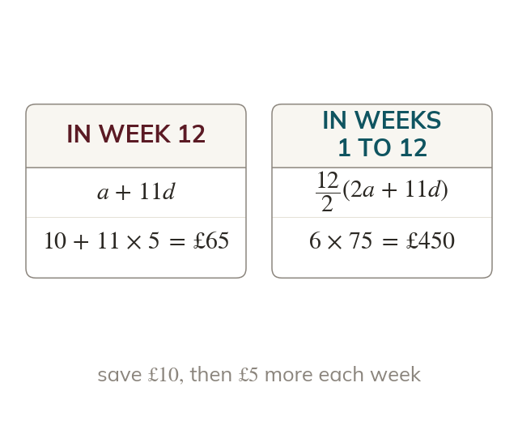
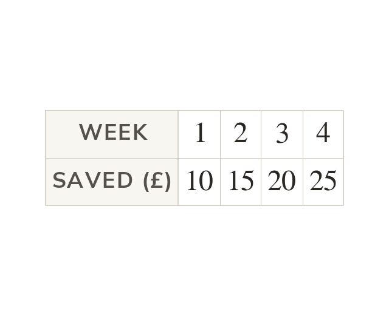
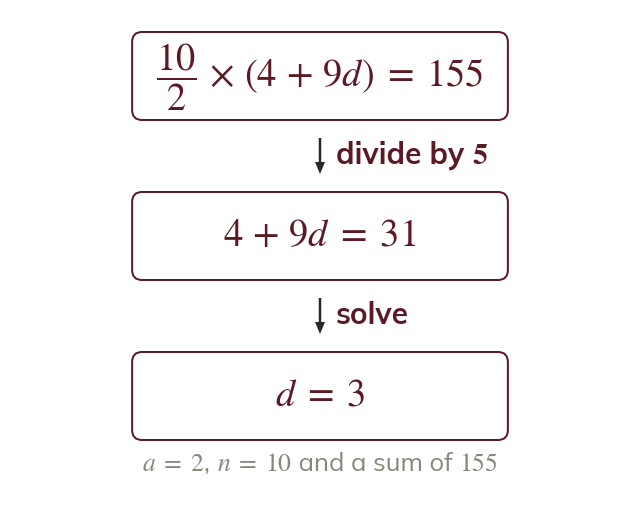
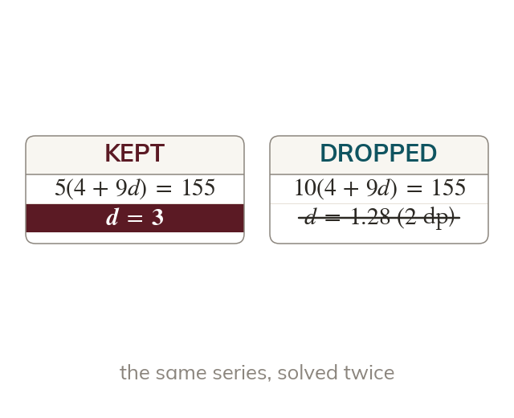

One term or the total
One week's amount is a term, from - 1)d. The total so far is a sum.
Savings that grow by the same amount each week, seats that increase row by row, a stack of logs: each is an arithmetic series. The skill is deciding whether the question wants one term or the total.
Work down the page at your own pace. Write every answer in your book first, then click to check it.
Read each card, then follow the worked examples one step at a time.

One week's amount is a term, from - 1)d. The total so far is a sum.

Week is the first term, so week is steps on. Naming a, d and first avoids miscounting.
Pick an answer. If it's wrong, the feedback tells you which mistake it was.
Read each card, then follow the worked examples one step at a time.

When the sum is given, the formula becomes an equation. Solve it for the one unknown.

The stays in the equation. Dropping it gives a wrong value.
Pick an answer. If it's wrong, the feedback tells you which mistake it was.
Finished? Next lesson: 10H.2.1 Tables of Values and y = mx + c.
For each skill, tap the one that is true for you today. Your Revise pages start with anything you mark Not yet.
Your ratings are saved on this device only.
Log in, then search for a code to practise that skill.
Videos, worksheets and more on each part of this lesson.